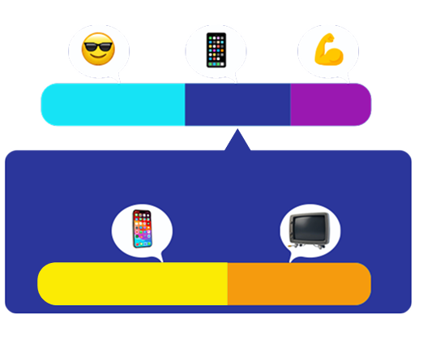

أمل هي طالبة في الصفّ الثامن.
في كلّ يوم خلال الأسبوع، بعد عودَتِها إلى المنزل، يكون لديها 5 ساعات تقريبًا من وقت الفراغ
(أيّ 300 دقيقة)، وهي تستغلّ هذا الوقت بالأساس لنشاط محدَّد...

قبل أنْ تغلق هاتفها، صادفَتْ مقطع فيديو جديدًا ليارا، صانعة المحتوى المفضّلة لديها.
يارا هي طالبة ثانويّة، تُشارِك فيديوهات من حياتها اليوميّة.
اُنقُروا على الفيديو لمُشاهَدتِهِ.
معلومة مهمّة
أمل أيضًا، مثل يارا، تذهب إلى النادي الرياضيّ وتعود منهُ مشيًا على الأقدام.
لذلك، وقت النادي الرياضيّ الإجماليّ يشمل أيضًا 20 دقيقة مِن المَشي (ذهابًا وإيابًا).
بينما وقت التدريب يُشير فقط إلى الوقت الذي تتدرّب فيه فعليًّا، أيّ دون وقت المَشي.


1. أ. تقرّر أمل أنْ تبني لنفسِها تطبيقًا بسيطًا لإدارة الوقت. افتَحوا التطبيق وساعِدوا أمل على حِساب أوقاتِها في حالات مختلفة.
ابدؤوا بفحص الأيّام التي يكون لدَيْها فيها وقت فراغ أقلّ،
وجرِّبوا حالتَيْن على الأقلّ:
عندما يكون لدَيْها 200 دقيقة، وعندما يكون لدَيْها 260 دقيقة فراغ. افحصوا كيف يؤثِّر ذلك على تخطيطها.
أداة لإدارة الوقت
1. ب. في معظم الأيام، يكون لدى أمل 300 دقيقة فراغ يوميًّا، وهي تريد استغلال هذا الوقت بأفضل شكل مُمكن. ولكي تنظّم أوقاتها بدِقّة، تقوم بضبط مؤقِّتات.
أدخِلوا عدد الدقائق المناسب في كلّ مؤقِّت:
2. كم دقيقة تستغرق كلّ حلقة من المسلسل؟
أدخِلوا عدد الدقائق المناسب في المؤقِّت:
قرّرَتْ أمل أنْ تقسّم وقت الشاشة بين مشاهدة
مسلسلها المفضَّل وتصفُّح الإنترنت بشكل حُرّ.
تستغرق كلّ حلقة من المسلسل نحو %40 من
وقت الشاشة.
105 دقائق من وقت الشاشة:
 40%
الباقي
40%
الباقي

أُعجِبَتْ أمل بالطريقة!
ورغم أنّ ذلك تجاوَزَ قليلًا وقت الشاشة المخصَّص لها اليوم (لا بأس يا أمل، قد يحدُث ذلك للجميع!)،
كان لا بدّ أنْ تشارِك صديقتَها روان.


3. أ. في البداية كتبَتْ أمل لصديقتِها روان:
"لكَيْ أعرف أيّ نسبة مئويّة من وقت الفراغ اليوميّ (300 دقيقة) مخصَّصة لمُشاهَدة مسلسلي المفضَّل، يكفي أنْ أحسِب
كَم يُساوي %40 من %35".
حدِّدوا ما إذا كانَت الجملة صحيحة أم غير صحيحة:
شرحَتْ أمل لروان كيف تعمل هذه الطريقة.
لكن لم يكن كلّ شرحها دقيقًا...
300 دقيقة:

3. ب. بعد ذلك، كتبَتْ أمل لصديقتِها روان:
"%40 مِن وقت الشاشة الذي أخصّصهُ لنفسي يُساوي تمامًا %40 مِن وقت فراغي".
حدِّدوا ما إذا كانَت الجملة صحيحة أم غير صحيحة:
شرحَتْ أمل لروان كيف تعمل هذه الطريقة.
لكن لم يكن كلّ شرحها دقيقًا...
300 دقيقة:


مرَّتْ عدّة أيّام، ونجحَتْ طريقة أمل بشكل رائع!
لكن عندما جاء يوم الخميس، كادَتْ تنسى...


4. خصّصَتْ أمل ساعة ونصف تقريبًا لموعد طبيب الأسنان، لذلك لم يتبقَّ لها سوى 210 دقائق فراغ.
ومع ذلك، لم تتنازَل عن الذهاب إلى النادي الرياضيّ.
إذا كان الوقت الإجماليّ للنادي الرياضيّالوقت الإجماليّ للنادي الرياضيّ يشمل أيضًا وقت الذهاب إليه والعودة منهُ (20 دقيقة بالمُجمَل). 60 دقيقة، فأيّ نسبة مئويّة من وقت فراغ أمل تقريبًا كانت مخصَّصة له؟
اختاروا الإجابة الصحيحة:
وقت الموعد لدى الطبيب يشمل أيضًا وقت المَشي إلى العيادة والعودة منها.

مرَّ يوم آخر، وبدأَتْ أمل تعتاد على الطريقة، حتّى لو اضطرَّتْ للتنازُل وأنْ تكون مرِنة في بعض الأمور.
تستعدّ أمل الآن لامتحان كبير ومهمّ.
5. أ. كم سيكون وقت فراغ أمل الإجماليّ إذا خصَّصَتْ 60 دقيقةصافية للتدريبوقت التدريب يُشير فقط إلى الوقت الذي تتدرّب فيه فعليًّا، أيّ دون وقت المَشي.، بينمايبقى الوقت الإجماليّ للنادي الرياضيّالوقت الإجماليّ للنادي الرياضيّ يشمل أيضًا وقت الذهاب إليه والعودة منْهُ (20 دقيقة بالمُجمل). %20 من وقت الفراغ؟
استعينوا بالخطّ البيانيّ واكتُبوا العدد الناقص:
بسبب ضغط الدراسة، لم تتمكّن أمل مِن مُمارسة التمارين الرياضيّة.
قرَّرَتْ أنْ تفحص ماذا سيحدُث في يوم ترغب فيه بإطالة وقت التمرين الصافي إلى ساعة كاملة (60 دقيقة).

الوقت الإجماليّ للنادي الرياضيّ
(يشمل وقت المَشي ذهابًا وإيابًا)


كلّ نقطة على الخطّ تمثّل زوجًا مرتبًا ملائِمًا للطريقة: عدد الدقائق المخصَّصة للنادي الرياضيّ (يشمل 20 دقيقة مَشي)، والوقت الإجماليّ الملائم لذلك.
5. ب. كم سيكون وقت التدريب الصافيوقت التدريب يُشير فقط إلى الوقت الذي تتدرّب فيه أمل فعليًّا، أيّ دون وقت المَشي. لدى أمل
إذا كان إجماليّ وقت الفراغ المتاح لها 350 دقيقة؟
استعينوا بالخطّ البيانيّ واكتُبوا العدد الناقص:
الوقت الإجماليّ للنادي الرياضيّ
(يشمل وقت المَشي ذهابًا وإيابًا)
كلّ نقطة على الخطّ تمثّل زوجًا مرتبًا ملائِمًا للطريقة: عدد الدقائق المخصّصَة للنادي الرياضيّ (يشمل 20 دقيقة مَشي)، والوقت الإجماليّ الملائم لذلك.
5. ت. أيّ نقاط تمثّل أزواجًا مرتّبة يتوفّر فيها لأمل وقت فراغ إجماليّ لا يترُك لها وقتًا للتدريبوقت التدريب يُشير فقط إلى الوقت الذي تتدرّب فيه أمل فعليًّا، أيّ دون وقت المَشي. إطلاقًا؟
انقُروا على النقاط الملائِمة في الخطّ البيانيّ.
كلّ نقطة على الخطّ تمثّل زوجًا مرتبًا ملائِمًا للطريقة: عدد الدقائق المخصّصَة للنادي الرياضيّ (يشمل 20 دقيقة مَشي)، والوقت الإجماليّ الملائم لذلك.
الوقت الإجماليّ للنادي الرياضيّ
(يشمل وقت المَشي ذهابًا وإيابًا)

في اليوم التالي للامتحان الكبير، شعرَتْ بأنّها بحاجة إلى بعض الراحة.
6. قرَّرَتْ أمل أنْ تضيف لنفسها %20 إضافيّة من وقت الشاشة الأصليّ، الذي كان 105 دقائق.
كم سيكون وقت الشاشة لدى أمل في ذلك اليوم؟
اختاروا الإجابة الصحيحة:
7. حلَّتْ نهاية الأسبوع، وازداد وقت الفراغ لدى أمل.
تردَّدَتْ أمل بشأن الزيادة في وقت الشاشة، لذلك أجرَتْ بعض الحِسابات في تطبيق جديد طوَّرَتْهُ لإدارة الوقت خلال نهاية الأسبوع.
استخدِموا التطبيق الظاهر في جهة اليسار مرّتَيْن على الأقلّ، وساعِدوا أمل في فحص ما سيحدُث لوقت الشاشة إذا ازداد وقت فراغها بنسبة %80 وبنسبة %20.
تحدّي نهاية الأسبوع

8. في إحدى نهايات الأسبوع، ازداد وقت الفراغ لدى أمل من 300 دقيقة إلى 360 دقيقة.
قرَّرَتْ أمل أنْ تزيد وقت الشاشة بالتلاؤُم، من 105 دقائق (في اليوم العاديّ) إلى 126 دقيقة.
أكمِلوا الاستنتاج الرياضيّ الذي توصّلَتْ إليه أمل:
يا للمفاجأة!
هذا يعني أنّهُ إذا زِدْنا العدد الصحيح بـ %20، وزِدْنا الجُزء النِسبيّ أيضًا بـ %20،


أصبحَتْ أمل بارعة جدًّا في تنظيم وقتها، حتّى في الأيام المليئة بالمهام!
لكن ماذا يحدُث عندما تضطرّ إلى الاعتناء بأختِها الصغيرة؟
آهااا، ستقوم بحِساب ذلك في مرّة أخرى...